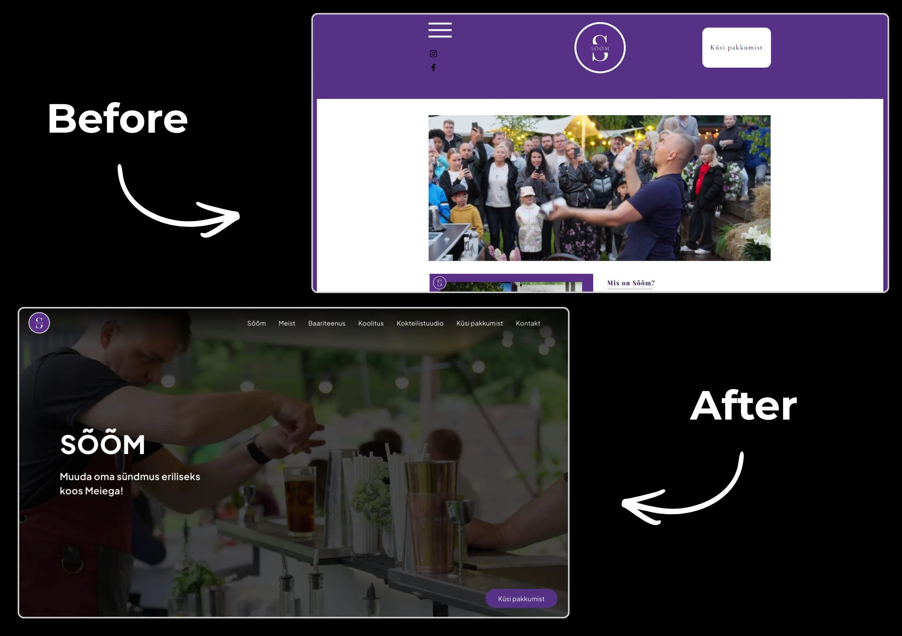
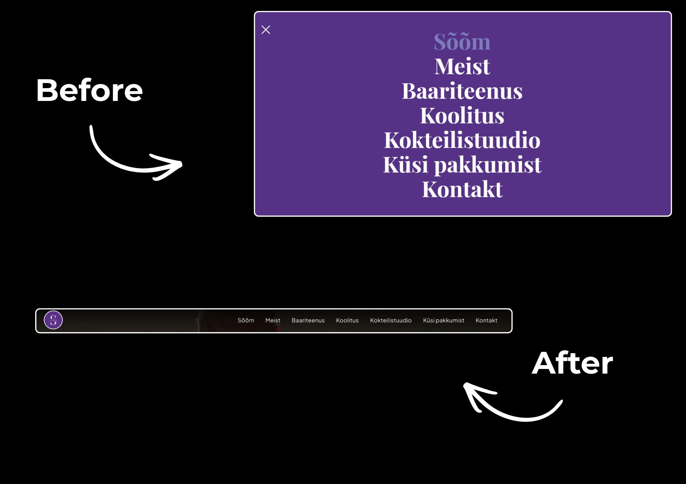
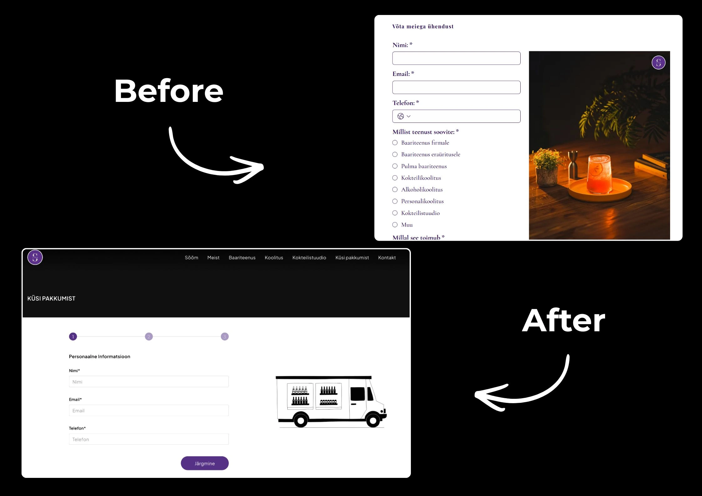

Cocktail agency SÕÕM OÜ website redesign
Sõõm is a cocktail agency providing bar services for private, corporate, and wedding events. They also offer cocktail and bartending courses, combining education with hands-on experience. In addition, Sõõm produces high-quality cocktail-themed visual content in their own studio.
Project Type
Website redesign
Overview
Sõõm needed a modern website redesign to better reflect their brand, clearly present their services (bar catering, trainings, and visual content production). This project was completed as a school project, with both designers and sales representatives participating.
Problem
The previous Sõõm website did not fully reflect the brand’s identity. It lacked visual appeal and movement, had unclear navigation, no strong call-to-action, a confusing booking process, and wasn’t optimized for mobile.
My role
UX/UI Design
What I did
- Created 2 moodboards to define the visual style
- Designed a mid-fidelity mobile prototype to plan the layout and structure
- High-fidelity prototypes for both mobile and desktop
- Added user flows to show how people would move through the website
- Small style sheet to keep the design consistent

Project overview and ux/ui design choices
For the website redesign, I focused on making the site more visually appealing and marketable. Since the previous version lacked movement and a clear call-to-action, I added one in the new design to better showcase Sõõm’s services and give their marketing more impact.
Key improvements included:

Changing the navigation menu
I updated the desktop navigation from a hamburger menu to a full navigation bar. This improves usability by making key sections immediately visible, reduces extra clicks, and provides a more intuitive browsing experience for desktop users.

Booking System Update
I redesigned the booking process from a single static form into a clear, three-step system. Users now provide their personal information, choose a date and time, and add any extra details in separate steps.
Fully Functional Mobile View
The previous site lacked a fully optimized mobile experience. I designed a complete high-fidelity mobile view that mirrors the desktop design while addressing the usability on smaller screens.
Reflection
Presenting the project to others - client and peers, gave me useful feedback for future design work. I gained a better understanding of how a website influences sales and marketing. Communication with the client improved my confidence in sharing my ideas more effectively.